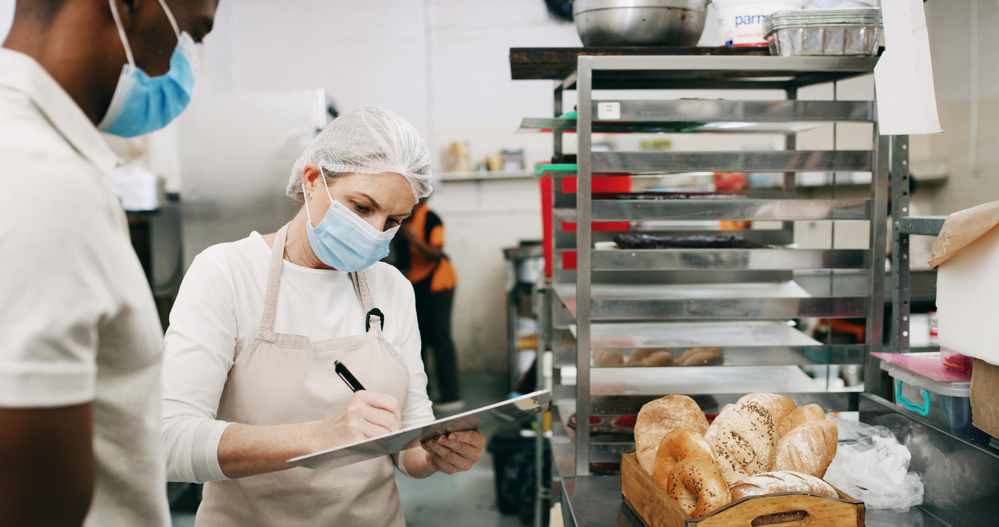

Excelência em Segurança e Gestão Nutricional
A GC Auditoria é uma unidade especializada em auditoria nutricional empresarial, oferecendo consultoria sanitária de alto nível e assessoria técnica contínua.
Nosso foco é estratégico: atuamos na prevenção de riscos sanitários, garantimos a total adequação às normas da Vigilância Sanitária (ANVISA) e estabelecemos parcerias de longo prazo através de contratos mensais de acompanhamento.

Por que sua empresa precisa de uma auditoria técnica?
- Risco de multa ou interdição
- Falhas na documentação exigida
- Equipe sem treinamento adequado
- Insegurança durante fiscalizações
- Falhas em rotulagem e controle sanitário
- Desorganização de processos internos
Modelos de Atendimento
Soluções adaptadas para cada necessidade do seu estabelecimento.
Auditoria e Diagnóstico Técnico
Serviço pontual focado em avaliação completa da situação atual do seu negócio, identificando pontos de melhoria e riscos sanitários.
Saiba MaisAcompanhamento Mensal
Focado em visitas periódicas, suporte técnico constante e segurança contínua. Proteção total para sua marca todos os meses.
Solicitar OrçamentoImplantação e Regularização Sanitária
Elaboração de Manual de Boas Práticas, POPs e toda a documentação necessária para estar em dia com a legislação.
Saiba MaisNossas Soluções Corporativas
Estrutura técnica completa para garantir a segurança alimentar e a conformidade legal do seu negócio.
Compromisso Corporativo
Nossa fundação é baseada na ética, excelência e no compromisso rigoroso com a segurança alimentar.
Missão
Elevar o padrão de segurança alimentar em empresas do setor através de auditorias estratégicas e consultoria técnica de excelência.
Visão
Ser a principal referência em consultoria nutricional B2B, reconhecida pela segurança jurídica e técnica proporcionada aos parceiros.
Valores
Ética profissional, responsabilidade técnica, excelência operacional e compromisso inegociável com a saúde pública.
Segmentos Atendidos
Soluções especializadas para diferentes modelos de negócio no setor alimentício.
Responsável Técnica
Giulia Celli - NutricionistaGiulia Celli é a fundadora e responsável técnica da GC Auditoria. Com sólida formação em Nutrição, Giulia lidera a empresa com uma visão estratégica voltada para a segurança alimentar e conformidade normativa.
Seu papel é garantir que cada cliente receba uma assessoria técnica rigorosa, assegurando que os processos internos estejam em total harmonia com a legislação sanitária vigente, protegendo a saúde dos consumidores e a reputação das empresas parceiras.
Sua empresa está preparada para uma fiscalização sanitária?
Não coloque sua operação em risco. Solicite agora um diagnóstico técnico e garanta a segurança do seu negócio.